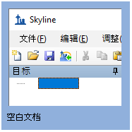
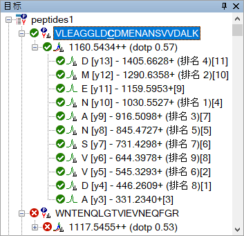
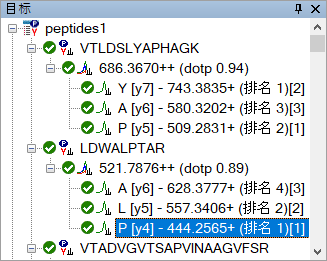
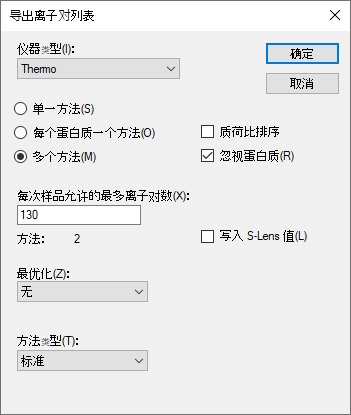
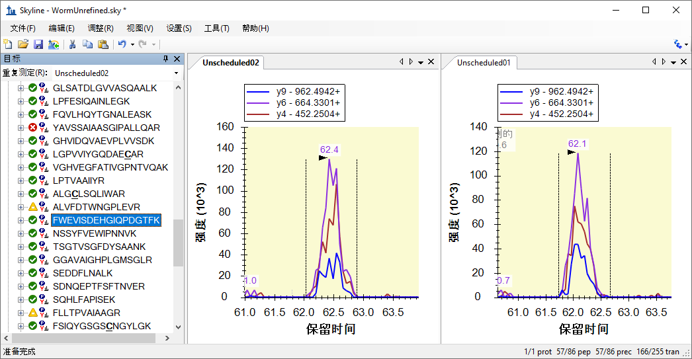
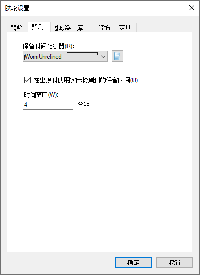
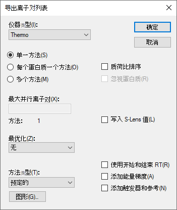
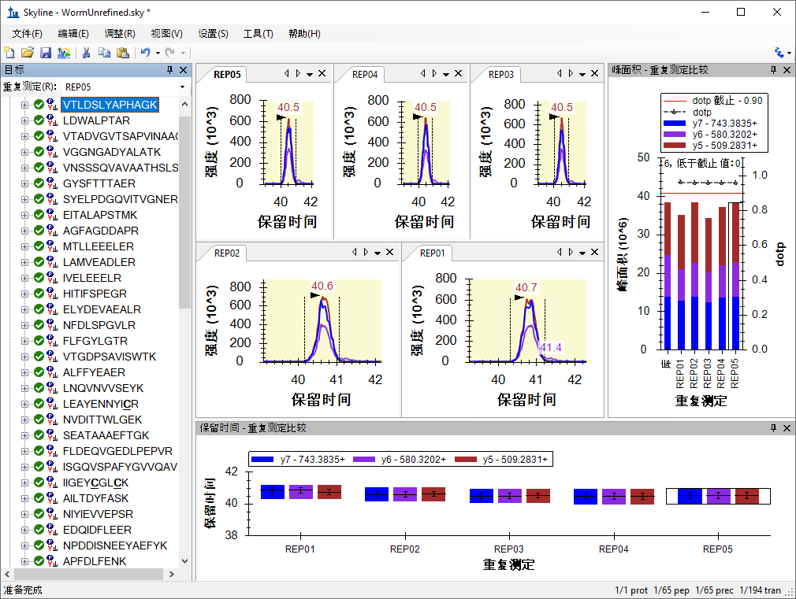

本教程介绍 Skyline 靶向质谱环境中可用于优化选择性反应监测（简称 SRM；亦称为“多反应监测”，简称 MRM）质谱实验方法的功能。这里所介绍的许多内容也适用于并行反应监测 (PRM) 或数据独立采集 (DIA)。
对于某个蛋白质，当用户不知道其可用于靶向定量的理想肽段时，用户可以很方便地利用Skyline 在数据中搜索最适合测量的一系列肽段。在一次实验中获得的这些肽段也可以导回Skyline用于其它实验，并且也可以在Skyline中继续对这些肽段进行优化。
我们将这个过程称为“靶向方法优化周期”，该过程经常以下图体现：
通过循环此周期，您可以从比较笼统的假设开始，包括您想监测的几十到几千个不等的蛋白质，快速缩小清单至最佳肽段、子离子和仪器设置，以便达到您的实验目标。但如果您的起始列表含有很多蛋白质，那么从其它教程中介绍的统计方法（例如分组比较和高级峰值检测模型）着手会更好。
本教程将引导您逐步完成此优化周期的两个半循环，以便您知晓如何进行更多的循环来创建充分优化的定量方法。
开始本教程之前，请下载下列 ZIP 文件：
https://skyline.ms/tutorials/MethodRefine.zip
将文件解压到您电脑上的某个文件夹，比如：
C:\Users\brendanx\Documents
这将创建一个新文件夹：
C:\Users\brendanx\Documents\MethodRefine
如果您在开始学习本教程之前就一直在用 Skyline，最好将 Skyline 恢复为默认设置。操作如下：

该 Skyline 实例中的文档设置现已重置为默认值。
由于本教程讲解蛋白质组相关内容，因此您可以执行以下操作来选择蛋白质组学界面：
Skyline 将在蛋白质组模式下运行，Skyline 窗口的右上角随之显示蛋白质图标 。
。
现在准备打开 WormUnrefined.sky 文件：
要开始操作：
然后Skyline 会显示一些图，包括来自谱图库中的相应 MS/MS 谱图，以及在 MacCoss 实验室仪器上对该肽段的子离子 y3 – y15 测得的时间-强度色谱图数据：

请注意，与每个肽段相关联的来自于谱图库中的 MS/MS谱图是在离子阱质谱仪上采集的。
在左侧的肽段视图中，Skyline 在肽段序列的左侧显示绿色、黄色和红色点。它们为峰质量图标，其含义分别如下：
色谱图数据是从 39 个Thermo 原始质谱文件（RAW文件）导入该文档。若要了解为何此文档中对这些肽段的一次测量需要 39 次单独进样，首先请注意 Skyline 窗口右下角的数字。您可以看到该文档包含 225 个肽段和 2096 个离子对，涵盖各肽段的 y3 – y(n-1) 子离子（其中 n 是整个肽段序列中氨基酸的个数）。
您正在查看的 Skyline 文档旨在帮助您确定在特定目标基质中哪些肽段是可以测量的，以及哪些是可测肽段的最佳离子对。每个肽段都拥有大量的离子对可以使我们确信给定的峰是在测量目标肽段。这种置信度是通过计算所研究的肽段的离子对峰强度和相同肽段的谱图库 1, 2 之间的点积值相关性来测定的。
若要了解本文档中测量肽段所需的离子对列表生成方法，请按照如下步骤操作：
导出离子对列表表单如下所示：

如果您使用 Windows 资源管理器查看 MethodRefine 文件夹的内容，会看到现在它包含 39 个新的 CSV 文件 (worm_0001.csv – worm_0039.csv)。每个文件大小约为 4K，且包含一个最多不超过 59 个离子对的列表，用于导入到一种未安排时序的 Thermo TSQ 方法。
注意：现代三重四极杆仪器可以同时测量数百个离子对，驻留时间少至 2 毫秒，但在 2009 年用于收集这些文件的 TSQ Quantum Ultra 上，这些设置是合适的。
如果您想了解如何导入该实验的初始仪器输出文件的方法，必须下载另一个 ZIP 格式的补充文件 (36M)。该 ZIP 文件包含 MacCoss 实验室收集的 39 个 Thermo 原始文件（161M，未压缩），用于测定您在上节刚刚导出的离子对列表。
您下载的原始 MethodRefine.zip 文件包含高性能数据文件 WormUnrefined.skyd，该文件已经具有 Skyline 所要求这些文件具有的所有数据。如果您想继续使用现有数据文件，可以跳至下一节。
如果您想亲自重新导入数据，请下载 ZIP 文件：
https://skyline.ms/tutorials/MethodRefineSupplement.zip
将文件解压缩到您之前使用的文件夹。这将创建一个新文件夹，如：
C:\Users\brendanx\Documents\MethodRefineSupplement
在 Skyline 中，按照以下步骤操作，删除以前缓存的数据：
色谱图表和峰质量图标已经从 Skyline 界面中删除。
现在您可以导入原始数据了。您无需一次导入所有数据。这对于在数据采集完成之前，对从这些较大，未优化的文档中导出的所有离子对列表进行检查是有帮助的。在本教程中，您将分两批导入数据。
首先，执行下列步骤：
Skyline 将开始导入这 15 个文件，在导入结果表单中可以看到如下所示的结果：

Skyline 将该数据存储至高性能数据文件后，日后随时可以检查结果。您甚至可以开始优化文档，但是对于本教程，您应当执行下列步骤来完成导入所有 39 个结果文件（不过在现代计算机上的运行速度非常之快，其它工作尚未开始便已完成导入）：
Skyline 完成导入后，您就可以使用与本教程来源匹配的数据文件进行下一节的操作。
开始优化文档的一种方法是通过目测检查每个肽段，并根据 Skyline 提供的丰富信息决定将要保留和删除的肽段。这就是 ASMS 2009 海报中本教程的 Skyline 文档最初优化的方法。浏览这些肽段只需要不到一小时，并选择和谱图库谱图相匹配的轮廓清晰的峰的三个最佳离子对。
查看本教程的 Skyline 文档时，您可能会问到关于第一个肽段的问题，即 Skyline 是否错过了比当前放大显示的峰更好的峰，要回答这个问题，您可以执行下列步骤，进行缩小：
您应该在此暂停，花些时间记住以下快捷键：
这些快捷方式允许您在当前选择的峰特写视图和您正在检查的仪器测量的离子对的整个时间范围之间迅速切换。
对于文档中的第一个肽段，整个范围如下所示：

乍一看这很像有大量噪音的数据，但是如果您想看更多的细节，您可以对标有保留时间的任何较大峰附近单击并拖曳出一个方框来放大该区域。
如果您确信这些都不包含该肽段的真正测量值，可以执行以下操作，来从文档中删除第一个肽段。
在检查色谱图峰时，了解肽段的预期保留时间也是很有用的。为实现这项功能，特定序列保留时间计算器 (SSRCalc) 3.03 已集成到 Skyline 中。不过其它教程中也介绍了其它的保留时间预测方法。若要观察 SSRCalc 疏水性得分和测量的肽段保留时间之间的关系线性回归图，请执行下列步骤：
Skyline 将显示如下图形：

注意位于当前已优化的回归线上的红色点。该点显示了 SSRCalc 分值和当前所选肽段的出峰时间。您在 Skyline 目标视图中选择不同的肽段时，突出点将会相应改变。
该图默认使用 r = 0.9 的阈值开始优化回归，然后从中逐步删除点并相应标注它们为异常值，直至达到设定的阈值。您可通过执行如下操作调整阈值：
Skyline 将重新计算回归，将更多的肽段标记为异常值，将图变成：

您可通过执行如下操作来创建新的线性方程式以进行保留时间预测：
Skyline 显示编辑保留时间预测器表单，该表单预先填入了来自保留时间回归图的信息，其中包括已优化的回归数据（146 个肽段），以及相同的斜率、截距和时间窗口。Skyline 建议的时间窗口为从回归残差计算获得的 4 个标准偏差，其中应当包含 146 个肽段中的 95%。
Skyline 还将选择与数据最匹配（r 最接近 1.0）的计算器。目前仅有的选择是用孔径大小为 100 或 300 埃的反相填料色谱柱数据训练过的 SSRCalc 3.0。在 MacCoss 实验室中，我们使用 90 埃孔径的填料，SSRCalc 3.0 (100Å) 通常会提供最佳匹配。
Skyline 会将所选肽段的预测的保留时间的指示符添加至色谱图中，如下所示（您可能需要将回归图移开以便进行观察）：

该指示符周围的阴影矩形显示了您在编辑保留时间预测器表单中选择的窗口（15.7 分钟）。任何阴影矩形外的值均大于预测值的 2 个标准偏差。
在离开保留时间回归图返回本文档进行手动优化之前，请注意 x 轴上的许多异常值点。这表示 Skyline 未找到所研究的肽段的任何峰。要理解其原因：
Skyline 将以红色突出显示该点并滚动目标视图，以显示新选择的肽段 (YLAEVASEDR)。按 Esc 键返回目标视图，现在应显示如下：

这里有 7 个肽段没有红点峰质量图标，表示这些肽段在导入的 RAW 文件中无法进行定量。如果我们是首次将原始文件导入本文档，这可能会令人觉得奇怪。39 个离子对列表对应 39 个原始文件。这是怎么回事呢？
通过进一步探测，Skyline 将会解开疑团：
色谱图现在将显示如下：

注意已经使用文件下拉列表将工具栏添加到顶部。如果您单击该列表，将会显示 worm_0027.RAW 和 worm_0028.RAW 这两个文件都包含该肽段测量值。
虽然将来可能在单次进样中对一个肽段进行两次测量，但是目前色谱图显示文件列表表明某处存在错误。您可能将作为单独平行测定的文件导入了 Skyline 的同一个逻辑平行测定，或者，如在此例中，样品列表为两个输出文件重复测定了同一个离子对列表，而不小心遗漏了另一个离子对列表。如果您向上滚动肽段视图，则可以看到此错误在 worm_0015.RAW 和 worm_0016.RAW 中再次发生。
现在，您可以删除没有任何数据的肽段，但是您可以将此操作作为本教程稍后讲述的单项优化操作的一部分。现在，您可以将其保留并继续：
即使您可能会最终使用 Skyline 中提供的功能更加强大的操作来优化您的文档，使用 Skyline 提供的信息帮助您了解如何单独选择肽段和离子对，也不失为好的办法。若要准备进行本文档的初始手动审核，请按如下步骤操作：
最后的操作将在肽段视图中显示“点积”值 (dotp)，那是测得的 SRM 峰面积和 MS/MS 库谱图峰强度之间的点积值相似性度量 4, 5。该值越接近 1.0，则匹配度越高。
备注：自 Skyline 2.1 版起，Skyline 中的所有点积值使用 Toprak 等人在 MCP 2014 阐述的“归一化光谱对比角度”计算。它们实际上不再是点积值。
肽段视图现在将如下所示：
所选肽段的点积值 (0.57) 并不好，但是所有测量的 11 个 y-离子具有较好的共洗脱峰：
如果您查看 MS/MS谱图库，您可以看到导致较差的点积值的问题所在：

请注意在 MS/MS谱图库中的两个最强峰标注有 y-离子和 b-离子（y10, b10 和 y12, b12）。我们已经知道用于 SRM 测量的 Thermo TSQ 仪器不能很好地保留 b-离子，这意味着这些峰的 b10 和 b12 离子不会在 SRM 测量中出现。

左侧的排名序号是 MS/MS谱图库峰排名，而最右边方括号内的数字是 SRM 峰排名。这些数字可能会帮助您决定是否相信这些离子对的测量值对应于MS/MS 谱图库中的肽段。不过在本教程中需要移除该肽段：
下一个肽段 (WNTENQLGTVIEVNEQFGR) 显然没有被测定，因为其最佳峰组仅包含小于一半离子对的峰，生成的点积值为 0.34。您也可以将其删除。
接下来的三个肽段是非常好的候选示例，能够满足这一层面优化的标准。所有三个肽段都有所有离子对的峰，都有 0.87 或更高的点积值。如果您为每个肽段仅选择 3 个离子对，第一个肽段将会比较简单。
在下一个肽段 LDWALPTAR 中，请注意 MS/MS 库谱图排名第 3 和第 4 的峰几乎相同，保留三个最强的 SRM 峰 [1]、[2]、[3]。
这将只剩下以下信息：
|  |
查看下一个肽段及其离子对，您会看到在 SRM 中 y3 有第三大的峰面积，但是有第四大峰面积的 y13 没有小很多。如果您删除这四个最强的峰以外的所有峰，可以按 Shift-F11 进行缩小而观察到 y3 或 y13 离子都没有很多的噪音或其它特征。y13 离子一般比 y3 离子更有选择性（因为其包含更多完整的肽段序列），在优化时，您应该尽可能找出最具选择性的方法。在本教程中，为该肽段保留 y14、y13 和 y11。
您可以继续使用此方法删除接下来的两个肽段，然后保留紧随其后的一个，保留具有最强信号、最小噪音和最佳选择性的离子对。或者，您可以使用 Skyline 优化表单在一项操作中执行众多初始过滤。
Skyline 优化表单会自动进行最常见的优化操作。您在本教程进行的手动优化可以通过一次操作完成，步骤如下：
此操作将为您留下 80 个肽段和 240 个离子对，且这些肽段和离子对的质量均很高。花点时间在色谱图中浏览它们，步骤如下：
但是，此操作可能显得有些激进。若要采取保守的方法来结合初始自动优化和后续手动检查，您现在可以执行以下额外的步骤：
此操作会将肽段的数量减小至 127，并保留足够的离子对，以保证点积值数值足以用来区别峰的质量。考虑到优化表单仍然会缺失一些优化的因素，因此您可以手动进行最终优化。
您正在编辑的 Skyline 文档曾在 2009 年春季 MacCoss 实验室的实际实验中使用；您正在采取与我们那时相同的步骤进行操作。但是，当时 Skyline 还没有优化表单，也无法计算点积值。因此，当时我们将优化周期下一个循坏的列表手动减少至 86 个肽段。您可遵循我们当时的选择，步骤如下：
这将删除所有未优化的结果和色谱图。
此项操作将使 Skyline 开始从 MethodRefine 文件夹的两个文件夹（Unscheduled01 和 Unscheduled02）中导入两个新的未安排时序的平行测定。每个文件夹包含两个原始文件，针对完成首次优化后的每个可测量肽段，带有 3 个离子对未安排时序的色谱图。
当前文档仍然包含了很多在这些原始文件中未测量的离子对。若要将文档减少为仅含测量的离子对，操作如下：
此操作将会留下 86 个肽段和 255 个离子对。
这些肽段可能在 4 次独立的进样中（而不只是 2 次）得到更好的测量。然而，由于优化的下一个阶段的目的是确定预测保留时间以进行时序安排，我们决定允许延长周期时间并减少洗脱曲线上的点，来减少需要的进样次数。
您可以创建与我们用于测量这些肽段类似的离子对列表，步骤如下：
导出离子对列表表单应当如下所示：

您将在 MethodRefine 文件夹中看到两个离子对列表 CSV 文件（Unscheduled_0001.csv 和 Unscheduled_0002.csv）。这些文件可用于收集新数据，比如您刚刚导入的文件。
查看您导入的未安排时序实验的结果：
Skyline 将显示您创建的两个重复检测的图表，如下所示：

根据这些测得的保留时间，您可以浏览 Skyline 如何对离子对进行时序安排，步骤如下：
Skyline 将显示下图：
从该图中，您可以查看仪器在整个色谱运行中使用先前测量的保留时间附近的多个可能的时间窗口测量的并行离子对的数量。时间窗口越大，您看到的同时出现的离子对就越多。在此文档中，时间窗口为 5 分钟时，同时测量的离子对的最大数量大约为 60。根据仪器的速度的不同，有可能在单个进样中测量所有剩余的肽段。
您将在安排时序的离子对列表中实际使用的时间窗口的选择取决于您色谱分离的可重复性。如果您安排时序的窗口过窄，而无法兼顾肽段的保留时间变异，您会看到截短或缺失的峰。创建安排时序的离子对列表之前，确认您已经很好地了解了色谱保留时间的变异。
在本实验中，我们使用 4 分钟的时间窗口，以进行单次进样平行测定，这样不会在同时测定最大数量的离子对时，对驻留时间或周期产生负面影响。您可以执行下列步骤进行相同的操作：
肽段设置表单应如下所示：

导出离子对列表表单如下所示：

在 MethodRefine 文件夹中，您将看到剩余肽段的已安排时序的 SRM 新离子对列表文件 (Scheduled.csv)。如果您用 Excel 查看这个文件，您可以看到在 D 栏和 E 栏中添加了起始时间和结束时间，两者间隔时间为 4 分钟。
您现在已准备好开始对 SRM 方法进行另一个周期的优化。在您正在操作的实验中，我们选择开始运行多个技术平行测定，以便更好地熟悉我们正在测量的肽段以及可能存在的任何问题，例如：
若要查看我们为该方法所测的 5 次进样数据，请执行下列步骤：
此操作将删除未安排时序的平行测定及其色谱图。
Skyline 为 5 个重复检测分别创建选项卡，并开始导入数据，在 Skyline 窗口底部的状态条中显示进度图。
完成导入时，可以看到在未安排时序的运行中测量的一些肽段已经从已安排时序的运行中删除，因为它们没有彩色的点。通过下列步骤，您可以将文档减少至仅包含已测量的肽段：
若要准备查看这些数据，请执行下列步骤：
调节分离条和窗口尺寸，直至 Skyline 窗口如下所示：

您现在可以使用下箭头键，查看为这些肽段采集的数据。其它教程会着重分析为多次平行测定优化的 SRM 方法。
本教程为您介绍了 Skyline 提供的强大工具，用于创建新的靶向蛋白质组方法，并对其进行优化以便在多次平行测定的定量研究中进行使用。您已经完成两次循环的靶向方法优化周期，应该能够使用这个流程开始研究自己的蛋白质组学假设。后续的优化可包括优化仪器参数，例如碰撞能量 (CE)，引入合成的含标记的内标肽以提高定量准确性，或运行校正曲线。请查找其它 Skyline 教程和其它 Skyline 功能，以便帮助您充分利用靶向蛋白组策略。
1. Prakash,A. et al. Expediting the development of targeted SRM assays: Using data from shotgun proteomics to automate method
development. J Proteome.Res. 2009.
Ref Type: In Press
2. Sherwood,C.A. et al. Correlation between y-type ions observed in ion trap and triple quadrupole mass spectrometers. J. Proteome. Res. 8, 4243-4251 (2009).
3. Krokhin,O.V. Sequence-specific retention calculator. Algorithm for peptide retention prediction in ion-pair RP-HPLC: application to 300- and 100-A pore size C18 sorbents. Anal. Chem. 78, 7785-7795 (2006).
4. Stein,S.E. & Scott,D.R. Optimization and Testing of Mass-Spectral Library Search Algorithms for Compound Identification. JASMS 5, 859-866 (1994).
5. Tabb,D.L., MacCoss,M.J., Wu,C.C., Anderson,S.D., & Yates,J.R., III Similarity among tandem mass spectra from proteomic experiments: detection, significance, and utility. Anal. Chem. 75, 2470-2477 (2003).